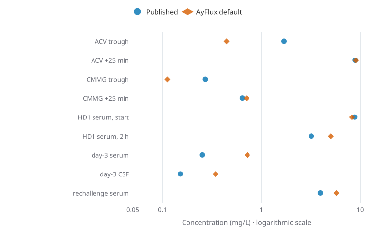
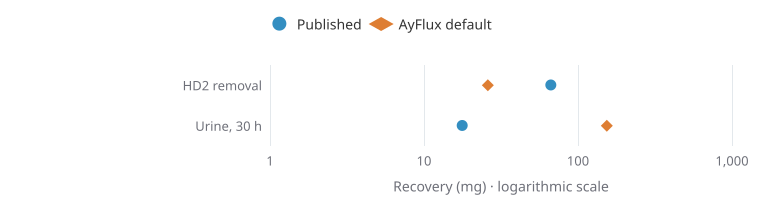
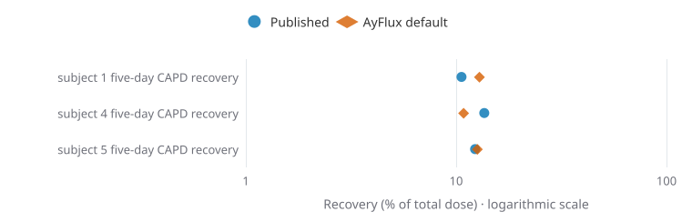

Model methods and limitations
What AyFlux calculates, how to read the estimates, and where the model has limits.
How the model works
AyFlux uses a two-compartment model to describe how acyclovir distributes and is cleared over time. The central and peripheral compartments are mathematical simplifications, not direct maps of specific organs.
Changing a parameter, such as assumed kidney clearance, changes the predicted curve. The result depends on the model and its inputs, not on measurements from a particular patient.
Pediatric research model
The pediatric IV module implements the final one-compartment equations from Abdalla et al. (2020). It has separate assumptions, study-defined indexed eGFR units, and an explicitly qualified variability band. It does not extend the adult dialysis or metabolite model to children.
AyFlux differential equations (implemented model)
The following expressions correspond to the core amount-state equations in public/assets/pk-engine.js. They describe how the educational model calculates concentrations; they are not equations fitted and validated against a clinical cohort. The simulator also handles treatment boundaries, oral dose events and optional dialysis exchanges.
State definitions: Ac is acyclovir amount in the central compartment (mg); Ap is peripheral acyclovir amount (mg); M is plasma CMMG amount (mg); D is the bioavailable acyclovir-equivalent oral depot (mg); P is drug in the PD dialysate (mg); VPD is dialysate volume (L). Cc = Ac/Vc, Cp = Ap/Vp, CM = M/VM, and Cd = P/VPD (all concentrations in mg/L).
All drug amount derivatives and fluxes are in mg/h. R_IV(t) is the IV infusion rate in mg/h, k_a the oral absorption rate in h−1, Q the central–peripheral exchange clearance in L/h, and all CL terms are clearances in L/h. Molecular weights are 225.21 g/mol for acyclovir and 239.19 g/mol for CMMG. A valacyclovir dose enters D as its molecular-weight-converted, model-bioavailable acyclovir-equivalent amount, rather than as the unchanged tablet milligrams. Evidence and limitations below.
Peritoneal membrane-transfer approximation
PS is an assumed drug permeability–surface-area term (L/h), UF_small an assumed small-pore convective water flow (L/h), σ an assumed reflection factor, and Q_reabs an assumed dialysate reabsorption rate (L/h). A positive JPD moves acyclovir out of plasma; it can be negative if return transfer dominates. The code applies simplified glucose-dependent ultrafiltration, volume changes and discrete dialysate drains. This is not an externally fitted PD membrane model. CMMG PD elimination uses a separate dialysis-clearance proxy rather than the same P and VPD states.
Dynamic CrCl and CSF state updates
When the user selects a time-varying renal profile, the entered CrCl (mL/min) is linearly interpolated between specified times and used to scale the renal acyclovir and CMMG clearances at each RK4 stage. If CrCl reaches zero, both renal terms become zero; nonrenal and dialytic terms can persist. The CrCl-to-drug-clearance mapping is an assumption, not a prediction of acute kidney injury or recovery.
Plasma–CSF acyclovir and CMMG are not additional integrated mass compartments in this implementation. Their concentrations are updated after each amount-state Runge–Kutta step using a positive-clamped, first-order lagged partition approximation:
Angle brackets denote the arithmetic mean of the concentrations at the two step endpoints. The core amount states use fourth-order Runge–Kutta with inserted medication and treatment boundaries; the CSF lag state uses the explicit update shown here. These are separate numerical methods, not a whole-body PBPK model.
Changing kidney function over time
AyFlux can use either a constant residual creatinine clearance (CrCl) or a user-entered sequence of CrCl values at specified hours. In the time-varying mode, the simulator linearly interpolates between values and scales the acyclovir and CMMG renal elimination terms as CrCl changes.
To try it, choose Custom CrCl trajectory under Patient, edit the hour and CrCl pairs, then select Apply profile. The Clearance & sessions tab plots the entered CrCl and modeled renal acyclovir clearance on separately labeled axes. This does not predict kidney injury or recovery from serum creatinine, and the relationship between CrCl and drug clearance remains an assumption rather than patient-specific validation.
Plasma and CSF estimates
Concentrations in blood and cerebrospinal fluid (CSF) do not necessarily rise and fall at the same rate. AyFlux displays separate plasma and CSF estimates to explore that difference. The CSF curve is a prediction, not a laboratory measurement.
What is CMMG?
9-Carboxymethoxymethylguanine (CMMG) is a metabolite of acyclovir. Studies have found an association between CMMG concentrations and neurological symptoms in some patients receiving acyclovir.
That association does not make a single concentration a reliable diagnostic cutoff. AyFlux's CMMG curves and reference lines should not be used to diagnose or rule out neurotoxicity. See Helldén et al. (2003) on serum CMMG, Helldén et al. (2006) on CSF CMMG and Lindström et al. (2019) on infection, barrier dysfunction and CNS drug measurements. These are observational studies rather than evidence for a universal mechanistic toxicity threshold.
Uncertainty and sensitivity
Shaded bands show how predictions vary under the assumptions used in the simulation. They do not guarantee that an individual patient's concentration will fall inside the band.
Sensitivity analysis shows which inputs have the greatest effect on a prediction. It helps you understand the model, but does not confirm that its assumptions are correct.
What the model cannot tell you
- It cannot measure a patient's actual plasma, CSF, or CMMG concentrations.
- It cannot determine whether an individual has acyclovir neurotoxicity or adequate antiviral exposure.
- It cannot account for every difference in physiology, drug handling, or dialysis performance.
- It cannot establish a safe dose or treatment schedule.
Parameter provenance and research gaps
These rows distinguish evidence-backed study context from AyFlux's assumed numerical implementation. A reference does not automatically validate a particular clearance coefficient, compartment volume or interval width.
| Component | Current nominal assumption | Evidence / outstanding work |
|---|---|---|
| Plasma volumes and intercompartmental flow | Vc = 0.32 × body weight (L); Vp = 0.37 × weight (L); Q = 10 × (weight/70)0.75 L/h | Illustrative parameters, not individually fitted to the Laskin study. Laskin 1982 provides renal-failure PK context. |
| Residual kidney clearance | CLkidney = 0.202 × CrCl (mL/min) × (weight/70)0.75 × clearance multiplier, in L/h | Assumed mapping and between-scenario scaling. Do not treat as verified patient-specific clearance. Actual renal handling changes with clinical state. |
| CMMG formation and elimination | CLform = 1.6 × (weight/70)0.75 L/h; CLM,renal = 0.12 × CrCl × (weight/70)0.75 L/h; CLM,nonrenal = 0.5 × (weight/70)0.75 L/h | Exploratory; research exists for metabolite measurements, but these exact coefficients have not been population-fitted. The non-kidney CMMG clearance was raised from 0.25 to 0.5 L/h in November 2026 to match CMMG falling between dialysis sessions in a published case (Helldén 2007, reference [45]), with Hara 2008 as an independent check. Smith et al. 2010. |
| Oral valacyclovir | Mean F = 0.545, first-order oral absorption ka = 1.8 h−1 | F is anchored to healthy-volunteer US labeling; ka and its uncertainty are assumed, not independently validated. |
| CSF acyclovir and CMMG | Nominal acyclovir partition 0.30, CMMG partition 0.25; lag times 4 and 6 h | Smith et al. 2010 reported CSF/plasma exposure ratios of roughly 0.25 for acyclovir and 0.025 for CMMG in nine participants. The AyFlux CMMG partition 0.25 is about tenfold the study ratio; lag times are not fitted. Lycke et al. 2003 found relatively stable CSF concentrations over the dosing interval, while Pouplin et al. 2011 observed changes over an encephalitis course. Neither study validates the AyFlux CSF filter or models blood–brain barrier permeability. |
| Peritoneal transfer and ultrafiltration | Exploratory membrane PS, small-pore convection, reabsorption and glucose decay | Relevant Burgess & Gill 1990, Shah et al. 1986, and Boelaert et al. 1987. These sources do not establish current APD prescription-level coefficients. |
| Monte Carlo bands | Lognormal parameter variability with user-adjusted coverage | Chosen educational prior assumptions; not externally calibrated 90% clinical prediction intervals. |
Additional references: Smith et al. (2010), ACV/CMMG CSF and systemic PK (PMID 20038622); Shah, Winer and Krasny (1986), CAPD acyclovir pharmacokinetics (PMID 3717158). These provide measurements for study-specific evaluation; each reconstruction must identify unavailable inputs and whether reference values were observed or source-author fitted. They do not establish clinical validation of this implementation. The source-code engine and independent mrgsolve reference expose the calculations for review.
Comparison with published measurements
The adult simulator uses a shared compartmental engine for intravenous acyclovir, oral valacyclovir and dialysis scenarios. Monte Carlo sampling varies its parameters, and concentration measurements can update parameter weights. The pediatric simulator reproduces a separate published population model. Model selection between these engines is explicit.
The following reconstructions use nominal coefficients. Differences are predicted minus published values. Concentrations are in mg/L and recovery amounts are in mg unless indicated. Unreported patient and treatment inputs require assumptions.
| Study and endpoint | Published → predicted (difference) | Reconstruction assumptions |
|---|---|---|
| Vasquez Vasquez et al. (2025), HD1 serum at start and after two hours | 8.80 → 8.27 (−0.53) 3.20 → 5.03 (+1.83) | Admission four hours after the fourth valacyclovir dose, constant Cockcroft–Gault clearance and HD drug clearance of 81.8 mL/min. |
| Vasquez Vasquez et al., second-session removal and 30-hour urinary recovery | 66.60 → 25.97 (−40.63) 17.70 → 153.85 (+136.15) | Urinary collection excludes HD1. The published dialysis recovery is estimated from effluent samples. |
| Kacířová et al., serum acyclovir trough and 25 minutes after infusion | 1.70 → 0.45 (−1.25) 8.90 → 9.05 (+0.15) | One-hour infusion, ninth IV dose, creatinine 87 µmol/L and zero starting concentration after a preceding oral course with unmeasured baseline. |
| Kacířová et al., paired serum CMMG | 0.27 → 0.11 (−0.16) 0.64 → 0.71 (+0.07) | Same reconstruction and sampling times as the parent drug. |
| Bataille et al. (1985), day-3 post-HD serum and CSF acyclovir | 0.252 → 0.720 (+0.468) 0.151 → 0.342 (+0.191) | 70 kg, CrCl zero, four-hour HD ending at hour 72 and drug clearance of 81.8 mL/min. |
| Boelaert et al. (1987), five-day CAPD recovery, subjects 1 / 4 / 5 | 10.60% → 12.90% (+2.30 points) 13.60% → 10.85% (−2.75 points) 12.30% → 12.61% (+0.31 points) | CrCl zero, published doses and four daily 2 L exchanges with 4/4/4/12-hour dwells. Individual fluid transport remains assumed. |
| Collignon et al. (2023), CRRT clearance (mL/min) | Blood-based 19.2–26.3 Effluent-based 27.6–44.3 AyFlux at reported flows 39.70–40.24 | Extracorporeal clearance component at 295–299 mL/kg/h effluent in a 10 kg child. Coefficient 0.95 and delivered fraction 0.85. Concentration reconstruction requires a pediatric endogenous-clearance model. |
Measured and predicted endpoints
Circles show published measurements and diamonds show nominal model predictions for the reconstructions above. Logarithmic axes display the different concentration and recovery magnitudes. Each row represents a reported endpoint.



Stathoulopoulou et al. (2002) report mean urinary and CAPD recovery of 3.4% and 6.51% in different participant subsets. The dose denominator is ambiguous, and individual weight, CrCl and exchange prescriptions are unavailable. The accompanying sensitivity analysis retains both denominator interpretations.
A grid selected reduced renal and nonrenal clearance and increased central volume against the two Kacířová parent samples. This improved trough agreement but worsened several HD and CSF predictions in other studies. The selected volume lies at the grid boundary, and the other study outcomes were known during experiment design.
Study protocols, sensitivity analyses and reproducible JavaScript commands are available in the benchmark comparison files. Each study file links its original source. These results describe performance in the stated reconstructions.
Research evidence and reference updates
Publication update: Vasquez Vasquez and colleagues’ case is now published in British Journal of Clinical Pharmacology (2025;91:2469–2473), doi:10.1002/bcp.70138. Reference [22] retains the earlier preprint as publication history; the current HD reconstruction already cites the final article. These are the same case.
The complete numbered bibliography includes publication details and DOI links. Bibliographic verification, abstract review and full-text review are distinct; see individual source notes.
These primary studies and clinical reports offer benchmarks and scientific context. They do not constitute validation of AyFlux. To see the full numbered bibliography, open the simulator’s References & methods tab.
- Plasma and CSF pharmacokinetics: Lycke et al. (2003) measured steady-state serum and CSF acyclovir after valacyclovir. Pouplin et al. (2011) reported CNS-infection CSF concentrations over time. Lycke et al. (1989) investigated oral acyclovir, a route not supported by AyFlux.
- CMMG and observed neuropsychiatric symptoms: Helldén et al. (2006) reported CSF CMMG differences between symptomatic and asymptomatic individuals. This association is not a validated causal threshold.
- Renal failure and dialysis removal: Almond et al. (1995) studied oral acyclovir in hemodialysis (not an AyFlux-supported oral route); Vasquez Vasquez et al. (2025) reported serum, urinary and dialysate acyclovir measurements in a single case; Sadjadi et al. (2018) described a clinical PD-to-HD transition.
- Limitations of CSF-only efficacy claims: Bodilsen et al. (2019) is a clinical commentary emphasizing that CSF concentrations and in-vitro inhibitory concentrations cannot establish oral-valacyclovir efficacy for HSV encephalitis.
Detailed experimental reviews and uncertainty statements are tracked in the project's research validation files. Work in an open draft branch should not be mistaken for released clinical validation.
Sources and code
Open the simulator and select References & methods for the source list and model details. The AyFlux source code is also available on GitHub.